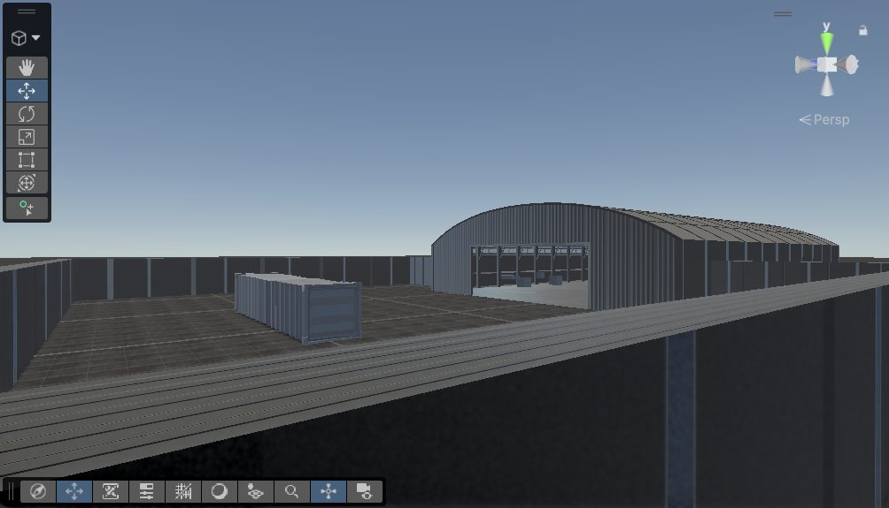

We sketched the game on a whiteboard in September. It is completely first person with two phases: Earth and Moon. The end goal is to maximize efficiency while still keeping up with time. Your score depends on efficiency and time, and the supplies are randomized each run. [1]
Players log what they load on a small tablet. A mission lander talks to you, and we may add a rocket ride for polish.

We load Day 14 supplies first so Day 1 supplies sit by the door when we land.
You pull out what the crew needs first, and the log updates as things leave.
The weight uses lunar gravity: 2 kg × 1.62 m/s² ≈ 3.2 N. [1]
We chose these dimensions for two main reasons. First, they best match the NASA HUNCH requirements. Second, they closely match real-life shipping containers, which gives us simpler calculations and more real-world data. [1]
Since we are planning around a 14-day mission, we have adjusted our inventory to best match a crew of four.
Our idea consists of moving the door to the middle of the container to cut down on how far a robot/human has to travel, and that a moving rack is worth a look. However, we are still looking into this!
[Add: which missions we are targeting for PDR]